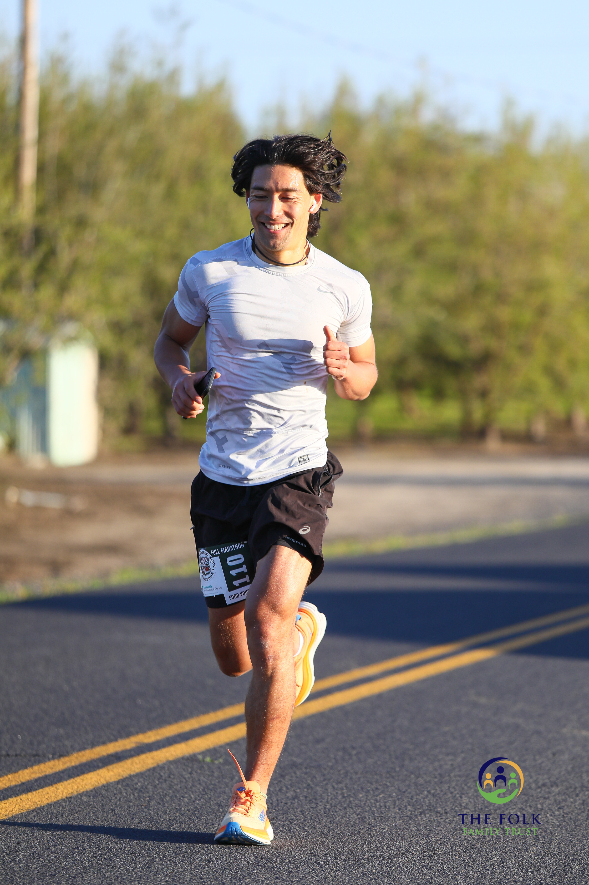

WHY WORK WITH ME?
Left & Right
Over the course of my athletic career, I built the most optimal routine to maximize my fitness level to help me achieve my goals. Some of my achievements include: playing sports at a collegiate level; running full marathons, competing in a half-ironman relay race, and more. Achieving fitness goals are perfect examples of delayed gratification from making consistent effort over the course of a long time. Practicing disciplinary habits to achieve those goals gave me confidence and self respect that I wouldn't have otherwise! My approach is to support everyone to build sustainable habits in exercising, dieting, and sleeping through my interactive program. I truly believe in the power of habits, consistency and accountability.
 アスリートとしてのキャリアの中で、僕は自分の目標を達成するために、フィットネスレベルを最大限に高める最適なルーティンを構築してきました。 大学レベルでのスポーツ、フルマラソン、ハーフ・アイアンマン・リレー・レースへの出場などです。フィットネスの目標達成は、長い時間をかけて継続的に努力することで、満足感を得ることができるのが魅力です。 目標を達成するために規律ある習慣を実践することで、僕は自信と自尊心を得ることができました！ 僕の個人的なアプローチは、プログラムを通じて、運動、ダイエット、睡眠において持続可能な習慣を身につけることをサポートすることです。 僕は習慣の力、一貫性、チームワークが成功の元だと思います。
理想な自分になってから得れれる自信を作るサポートをぜひ僕任せてください。
アスリートとしてのキャリアの中で、僕は自分の目標を達成するために、フィットネスレベルを最大限に高める最適なルーティンを構築してきました。 大学レベルでのスポーツ、フルマラソン、ハーフ・アイアンマン・リレー・レースへの出場などです。フィットネスの目標達成は、長い時間をかけて継続的に努力することで、満足感を得ることができるのが魅力です。 目標を達成するために規律ある習慣を実践することで、僕は自信と自尊心を得ることができました！ 僕の個人的なアプローチは、プログラムを通じて、運動、ダイエット、睡眠において持続可能な習慣を身につけることをサポートすることです。 僕は習慣の力、一貫性、チームワークが成功の元だと思います。
理想な自分になってから得れれる自信を作るサポートをぜひ僕任せてください。